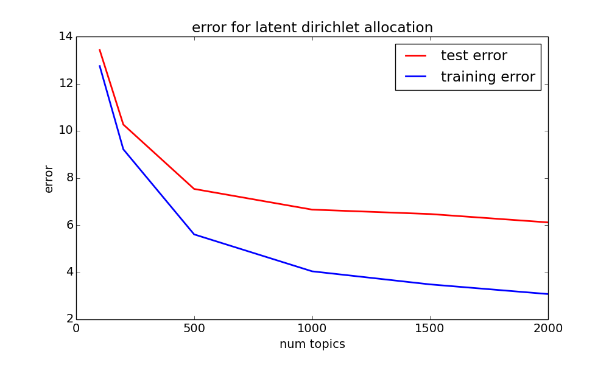
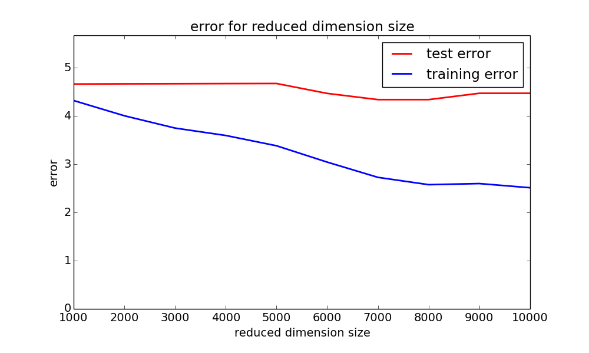
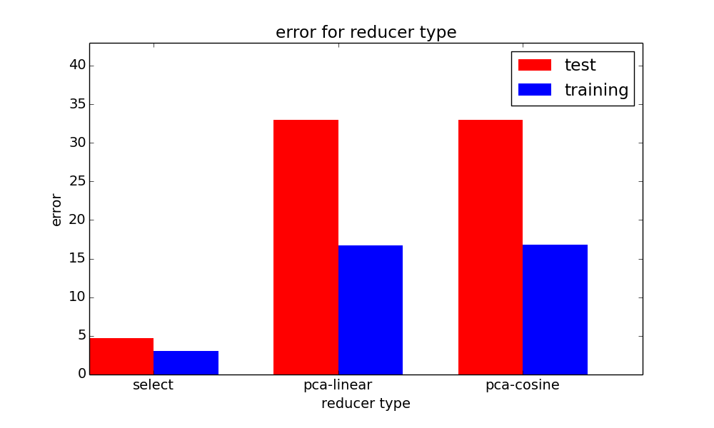
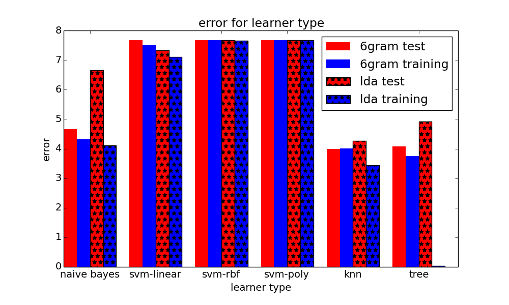

JANKY OAR
A LOOK INTO THE WORLD OF REDDIT


- SENTENCE PREDICTOR
- VOTE PREDICTOR
A LOOK INTO THE WORLD OF REDDIT
First, a little explanation on what reddit is.

We use the comments and upvotes data within a subreddit to build a predictor on how many votes a comment will receive on a given subreddit. We treat this problem as an example of supervised learning, where we want to perform a regression from feature vectors on text onto an upvote score. To do this, we separated the process into multiple parts.
[0,1]X to our normalized upvotes Y. Our supervised learning methods include:
Below are our cross validation training and test
errors for various combinations of (feature model, reducer model, learning model). We defined the error of a feature vector x with predicted normalized upvotes y' and true normalized upvotes y as |y' - y|. The error of a data set is the sum of all the errors of individual feature vectors x. Overall, we conclude that the biggest impact on the error of our data set was the feature model we chose--given the model, the target dimension size, the reduction model, and learning model had less impacts on the error.
Ngram error. This plot shows how the error changes as we increase N for our Ngram model. We hold the reducer (select 5000 best features) and learner (naive bayes) constant.
LDA error. This plot shows how the error changes as we increase the number of topics discovered by our Latent Dirichlet Model. For these experiments, we did not use a reducer, and we used naive bayes as our learner.
Reduced dimensionality error. This plot shows how the error changes as increase the reduced dimensionality size. Here, we use 6-grams, naive bayes, and we use select k best as our reducer model.
Error by Reduction Model. This plot shows how the error changes as we change our reducer model. We use 6grams with 1000 as our reduced dimension size, and we use naive bayes. We used select k best, PCA using a linear kernel, and PCA using the cosine kernel.
Error by Learning Model. This plot shows how the error changes as we change our learner. We tested these learners: naive bayes, SVM using a linear kernel, SVM using a radial basis function kernel, SVM using a polynomial kernel (degree 3), K nearest neighbors, and decision trees. We test all of these against (6 gram, select best 100 features) and (LDA with 1000 topics, no reducer).